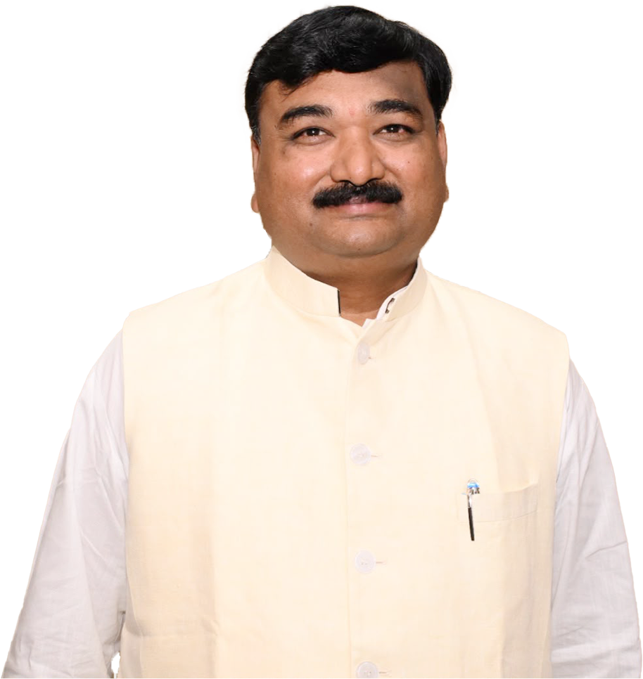

Official Spokesperson, BJP Telangana
Public Intellectual. Political Communicator. Nation Builder. Dr. Rahul Saridena represents a new generation of leadership combining policy understanding, strategic communication, cultural rootedness, and grassroots engagement.

Inspired by the vision of Viksit Bharat — Dr. Rahul Saridena believes Telangana can emerge as a leading contributor to India's growth story.
Explore VisionTransformative projects for connectivity and growth
Fair prices, irrigation support, agricultural innovation
Greater participation across governance and leadership
Celebrating Telangana's rich civilisational traditions
Meaningful change is driven by informed citizens, committed volunteers, and dedicated grassroots leadership. Join Dr. Rahul Saridena's mission to strengthen public engagement and contribute towards nation-building.